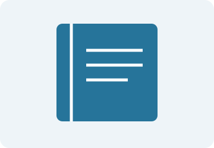
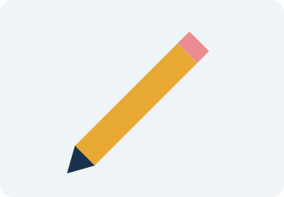

Busca tus útiles
No encontramos productos con esa búsqueda. Prueba con otra palabra o elige «Todas las categorías».
Materiales para tus clases
Ilustraciones orientativas creadas para esta tarea; no representan modelos comerciales ni existencias.


Organiza tu solicitud
- Escritura y corrección
- Lápices
- Borradores
- Sacapuntas
- Apuntes: cuadernos
- Transporte: mochilas
- Medición: reglas
Pasos para preparar una consulta
- Revisa los útiles del catálogo.
- Elige el producto y la cantidad que necesitas.
- Practica con el formulario académico de contacto.
Palabras del catálogo
- Grafito
- Material utilizado en la mina de muchos lápices.
- Apunte
- Nota escrita para recordar una explicación.
- Medición
- Comparación de una longitud con una unidad.
Usos de los productos
| Producto | Uso general | Precio (RD$) | Área de uso |
|---|---|---|---|
| Cuadernos | Tomar apuntes | 85 | Escritura y corrección |
| Lápices | Escribir con grafito | 15 | |
| Borradores | Borrar trazos de lápiz | 10 | |
| Sacapuntas | Afilar la punta de los lápices | 25 | |
| Mochilas | Transportar materiales | 1,250 | Organización |
| Reglas | Medir longitudes | 35 | Medición |
| Nota | Precios de referencia para el proyecto. No se realizan ventas. | ||
Guía visual de estudio
Este marco muestra una guía local que se puede abrir también en una página independiente.